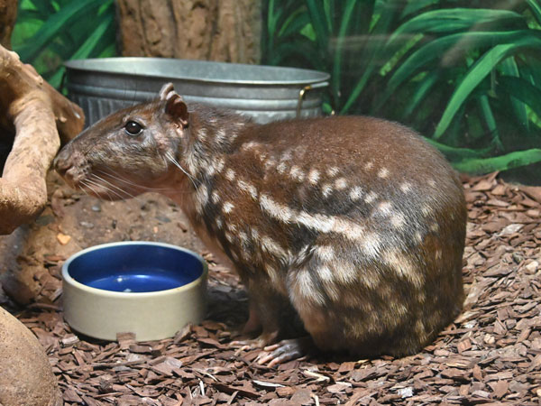

Paca


INFORMAÇÕES SOBRE O ANIMAL
- Nome Científico: Cuniculus paca
(Linnaeus, 1766) - Nomes Populares: Conhecida também como "paca" ou "paca-tatu"
Classificação Biológica
- Domínio: Eukaryota
- Reino: Animalia
- Filo: Chordata
- Classe: Mammalia
- Ordem: Rodentia
- Família: Cuniculidae
- Gênero: Cuniculus
- Espécie: C. paca
Nutrição Geral e Hábitos Alimentares
- Tipo de Nutrição: Herbívoro
- A paca é um animal que se alimenta principalmente de frutas, sementes, raízes e folhas. Ela possui uma dieta variada que inclui também alguns tipos de cascas e ocasionalmente pequenos insetos. É conhecida por seu comportamento de escavação, que ajuda na sua alimentação e na construção de tocas.
Morfologia
- Pelagem e Corpo
A pelagem da paca é espessa e marrom-escura com manchas brancas, que ajuda a camuflá-la em seu ambiente natural. O corpo é robusto e adaptado para cavar, com pernas fortes e uma cauda curta.
Órgãos Respiratórios
O sistema respiratório da paca é composto por narinas, fossas nasais, cavidade nasal, faringe, laringe, traqueia e pulmões, adaptados para um estilo de vida predominantemente terrestre.
Patas
As patas são fortes e adaptadas para escavação, com garras afiadas que auxiliam na construção de tocas. Comportamento
- A paca é um animal noturno e solitário. Ela vive em tocas que cava no solo e é conhecida por seu comportamento reservado. Tem hábitos alimentares específicos e é muito adaptada ao seu ambiente, usando suas habilidades de escavação para se proteger e encontrar alimentos.
Ocorrência
- A paca é encontrada na América Central e América do Sul, principalmente em áreas de florestas tropicais e subtropicais. Sua distribuição abrange países como Brasil, Colômbia, Venezuela, Peru e Equador. Prefere habitats com vegetação densa e próximo a fontes de água.
- Mapa de Ocorrência
Reprodução
- Sistema de Acasalamento: A paca é monogâmica e forma pares durante a temporada reprodutiva.
Reprodução ao Longo do Ano: A reprodução pode ocorrer durante todo o ano, mas com maior incidência em épocas específicas dependendo da região.
Gestação: A gestação dura cerca de 120 dias.
Ninhadas: As fêmeas geralmente dão à luz de um a dois filhotes por ninhada. Os filhotes nascem completamente dependentes da mãe e permanecem com ela até atingirem um tamanho suficiente para se sustentar.